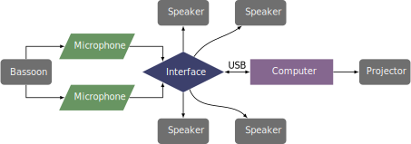

This piece was written in 1992 and was revised in 2006. It is one of the few pieces that requires the use of a Mac computer. The piece can be obtained by contacting the composer at his website.
From the hardware perspective, this piece requires two microphones to capture the signal and an audio interface that has four outputs to four speakers. Two of these are set in the back of the hall behind the audience. There is also a visual component to this piece, so a projector connected to the computer will be necessary to show the video to the audience. There are no MIDI controllers involved, as the piece is controlled through other means.
The setup for this piece is shown below. 
nThe Max patch is shown in figure the screenshot section. The patch operator should press the "INIT" button near the top of the patch. The video display window should be dragged to another screen or monitor that is connected to a projector so the audience can see it. The video is also controlled by the Max patch and responds to the sound being played by the bassoonist.
This piece has more requirements than other pieces running Max/MSP. The primary difference is that the patch is controlled using the software NoteAbilityPro, which was designed by the composer. NoteAbilityPro (NA) is a notation program that can also send messages to Max/MSP during playback. The software only runs on Mac systems. Technically, the computer running NA does not have to be the same computer running the Max patch, but that is a setup not discussed here. The NA file opens to look like the screenshot in the section below.
The NA program will send Max messages (all of the boxes in the bottom staffs) during playback, so all the patch operator has to do is press the play button on the transport controls, shown below. The patch operator then must follow the bassoonist by speeding up and slowing down the playback to match the performance as closely as possible. This is done by either clicking on the transport bar or by using the mouse wheel on the transport bar.
This piece is very difficult and is out of range for undergraduate students. There are numerous passages of extremely fast notes with wide, chromatic leaps. The composer makes frequent use of feathered beams, or accelerating and decelerating rhythms. There are timbral trills, awkward repeated figures, and multiphonics. The electronics part is fairly straightforward, as the person operating the patch just follows the score and changes the tempo to match the bassoonist. Even with this flexibility, this piece is too difficult for undergraduate students.
This piece fits into the avant-garde style and features multiphonics, dissonant leaps, timbral fingerings, and a lack of any tonal center. It would be a hard piece for audiences unaccustomed to this style of music, although having the interactive video may add interest to the overall experience.
©2024 by Benjamin Bradshaw
Logo ©2024 by Hannah Bradshaw